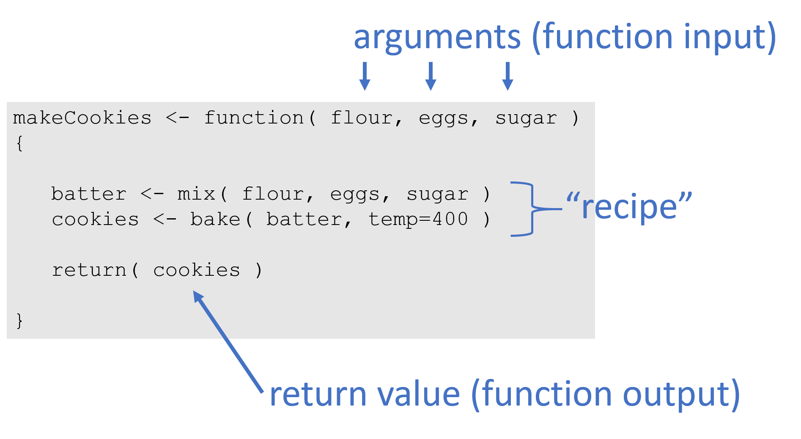

Introduction to Functions

Key Concepts
A function is a data recipe, and a building block of longer scripts.
You can think of functions as input-output machines that take raw data and transform it into useful statistics.
They accepts arguments (data or parameters), and return the requested calculation or transformation.
For example, the mean() function requires a vector of measurements as the input and return the average measure for the group as the output.
VOCABULARY:
- The function
function() - arguments
- argument values
- default values
- explicit vs implicit argument calls
- return values
- arrow vs. equal sign
0.1 Computer Programs as Recipes
Computer programs are powerful because they allow us to codify recipes for complex tasks, save them, share them, and build upon them.
In the simplest form, a computer program is like a recipe. We have inputs, steps, and outputs.
Ingredients:
- 1/3 cup butter
- 1/2 cup sugar
- 1/4 cup brown sugar
- 2 teaspoons vanilla extract
- 1 large egg
- 2 cups all-purpose flour
- 1/2 teaspoon baking soda
- 1/2 teaspoon kosher salt
- 1 cup chocolate chips
Instructions:
- Preheat the oven to 375 degrees F.
- In a large bowl, mix butter with the sugars until well-combined.
- Stir in vanilla and egg until incorporated.
- Addflour, baking soda, and salt.
- Stir in chocolate chips.
- Bake for 10 minutes.
In R, the recipe would look something like this:
function( butter=0.33, sugar=0.5, eggs=1, flour=2, temp=375 )
{
dry.goods <- combine( flour, sugar )
batter <- mix( dry.goods, butter, eggs )
cookies <- bake( batter, temp, time=10 )
return( cookies )
}Note that this function to make cookies relies on other functions for each step, combine(), mix(), and bake(). Each of these functions would have to be defined as well, or more likely someone else in the open source community has already written a package called “baking” that contains simple functions for cooking so that you can use them for more complicated recipes.
You will find that R allows you to conduct powerful analysis primarily because you can build on top of and extend a lot of existing functionality.

Figure .: Assignment of output values
0.2 Loan Calculator
Let’s look at a slightly more comlicated example by creating an amortization calculator to determine monthly payments that would be required from a home mortgage loan.

Figure .: Example monthly payment based upon loan amount (P), interest rate (R), and time period of repayment (T).
Where:
- T = time of loan period
- P = loan principal, or total amount borrowed
- R = annual interest rate, or annual percentage rate (APR)
A mortgage calculator considers the total loan amount (the principal), the interest rate or APR (annual percentage rate), and the period of the loan in order to determine how much needs to be paid each month so that payments are distributed equally across the loan term. If we look up a formula, we will find:
We can simplify this formula a bit by putting everything in monthly periods:
\[ PAYMENTS = \frac{principal \cdot interest \ rate}{1-(1+interest \ rate)^{- \ months}} \]
Where:
- months = years T x 12 months
- interest rate (monthly) = annual interest rate R / 12 months
When we translate this mathematical formula into R code, the new function will look like this:
calcMortgage <- function( principal, years, APR )
{
months <- years * 12 # covert years to months
int.rate <- APR / 12 # convert annual rate to monthly
# amortization formula
monthly.payment <- ( principal * int.rate ) /
(1 - (1 + int.rate)^(-months) )
monthly.payment <- round( monthly.payment, 2 )
return( monthly.payment )
}What happens if you omit an argument from the function? Why?
1 Default Arguments
We can add default values for arguments. These defaults allow us to utilize the function without specifying values for those arguments.
calcMortgage <- function( principal, years=30, APR=0.05 )
{
months <- years * 12 # covert years to months
int.rate <- APR / 12 # convert annual rate to monthly
# amortization formula
monthly.payment <- ( principal * int.rate ) /
(1 - (1 + int.rate)^(-months) )
monthly.payment <- round( monthly.payment, 2 )
return( monthly.payment )
}Note that calcMortgage( principal=100000 ) now works because the function uses the default values for years and APR.
1.1 Defaults
Can you still use custom values for those arguments after defaults are set?
2 Implicit Argument Calls
An explicit call to arguments always uses the formal argument name such as principal=100000.
You can, however, also use implicit argument calls. These rely on the order arguments are specified in the function, and the order of your values in your call.
Implicit arguments calls can be risky, however, because it is very easy to mix them up.
Which of these calculations is correct?
Explain why.
3 Object Assignment vs Argument Assignment
Assignment is the process of assigning a name to an object or value in order to store the data for future use and allow it to be referenced later.
x <- 3We use assignment in data recipes (scripts) to save values, and in functions to assign values to specific arguments. Note that we use different assignment operators in each case.
Object assignment uses the arrow operator.
Argument assignment inside a function uses the equal sign.
principal <- 100000 # never use equals here
calcMortgage( principal=100000 ) # never use arrows hereFigure 3.1: Assignment of output values
4 Your Turn
Create a function to convert Fahrenheit temperatures to Celsius.
- What arguments do you need?
- How many decimals do you need? Consider using the
round( number, decimals )function to simplify output. - Don’t forget a return statement!
\[ celsius = ( \ fahrenheit − 32 \ ) × \frac{5}{9} \]
If you want to check your work, 212 degees Fahrenheit is equivalent to 100 degrees Celsius.
Can you use this function to convert from Celsius to Fahrenheit?